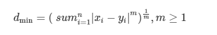
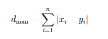
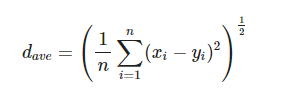
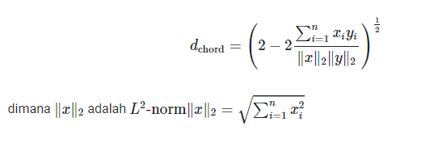
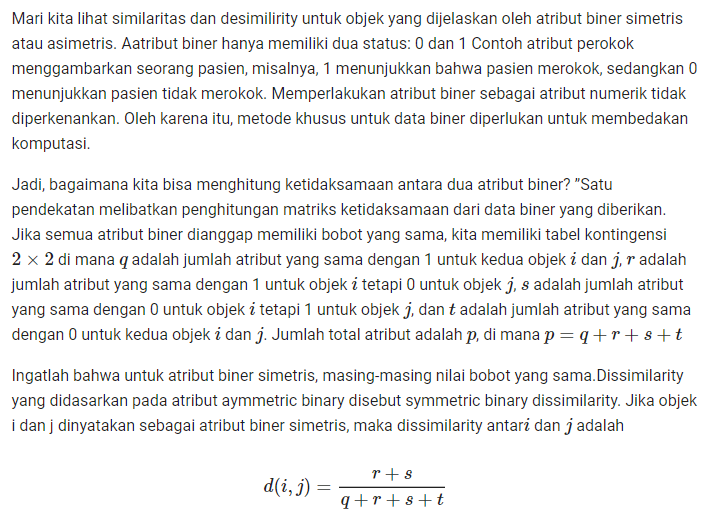
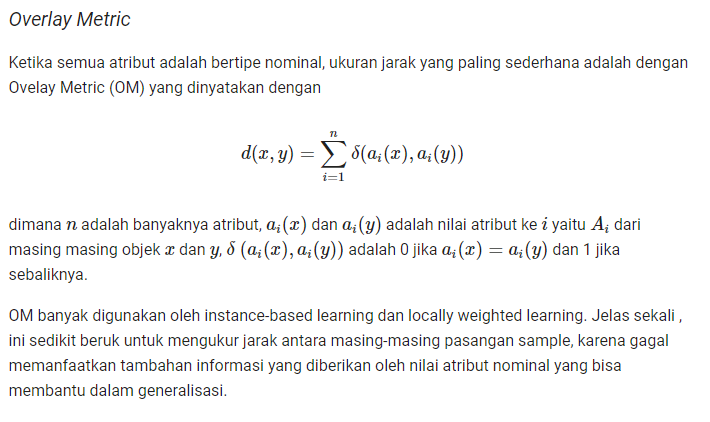
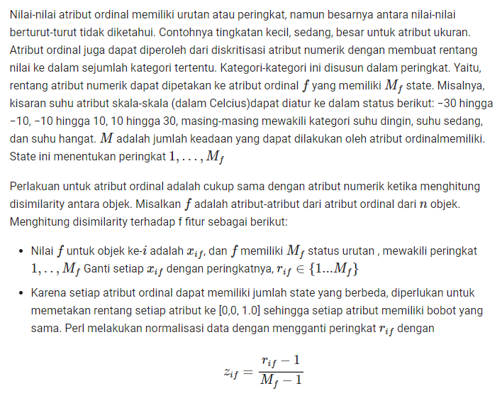
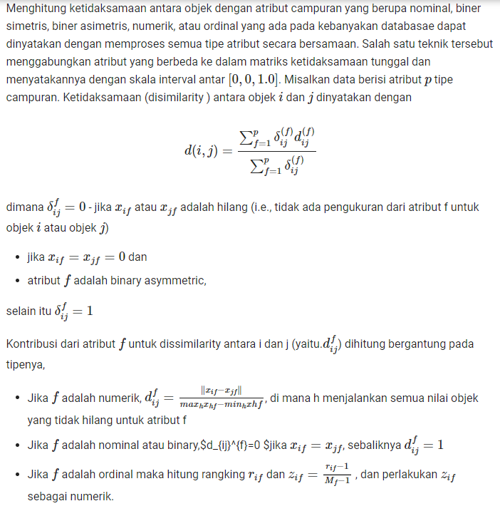

Tugas 2 Data Mining : Pemahaman Data
Atribut-Atribut dalam Data Mining
Atribut adalah karakteristik/ ciri/ variabel yang mendeskripsikan suatu objek. Objek adalah sesuatu yang digambarkan oleh atribut. Tipe-tipe data akan menentukan tipe operasi apa yang bisa dilakukan pada data tersebut.
Tipe-tipe atribut
1. Nominal
Nominal adalah tipe atribut yang mengidentifikasikan suatu perbedaan sifat, yang bertujuan hanya untuk membedakan nilai yang satu dengan yang lainnya. + Contoh: + NIM mahasiswa: E1E1 10 012, E1B2 09 123, E1A1 11 011. + Merek Handphone: Nokia, LG, Sony Ericson, Samsung.
2. Ordinal
Ordinal adalah tipe atribut yang mengidentifikasikan informasi mengenai suatu tingkatan yang menjadikan pembeda dari objek. Contoh: + Peringkat: Juara 1, Juara 2. + Kelas: Kelas bawah, kelas menengah, kelas atas. + Angkatan: Junior, Senior, Neneor.
3. Biner
Biner adalah atribut nominal dengan hanya dua kategori atau menyatakan: 0 atau 1. 0 biasanya berarti bahwa atribut tidak ada, dan 1 berarti bahwa itu ada. Contoh: + Jenis kelamin: Pria dan wanita. + Power: On dan Off. + Penghasilan: Untung dan Rugi. + Kutub: Utara dan Selatan.
4. Numerik
Numerik adalah atribut kuantitatif yang terukur, biasanya dalam bentuk tipe integer. Contoh: + Suhu: 50 Derajat Celcius, 60 derajat Kelvin, 10 derajat Fehrenheit. + Tahun: 2001,2006,2012.
Mengukur Jarak Data
Mengukur Jarak Data Tipe Numerik
Salah satu tantangan dalam era ini dengan datatabase yang memiliki banyak tipe data. Mengukur jarak adalah komponen utama dalam algoritma clustering berbasis jarak. Alogritma seperit Algoritma Partisioning misal K-Mean, K-medoidm dan fuzzy c-mean dan rough clustering bergantung pada jarak untuk melakukan pengelompokkan
Sebelum menjelaskan tentang beberapa macam ukuran jarak, kita mendefinisikan terlebih dahulu yaitu v1,v2 menyatakan dua vektor yang menyatakan v1=x1,x2,x3,...,xn dan v2=y1,y2,y3,...,yn, dimana xi,yi disebut attribut. Ada beberapa ukuran similaritas data ukuran jarak, diantaranya
Minkowski Distance
Kelompk Minkowski diantaranya adalah Euclidean distance dan Manhattan distance, yang menjadi kasus khusus dari Minkowski distance. Minkowski distance dinyatakan dengan
dimana m adalah bilangan riel positif dan xi dan yi adalah dua vektor dalam runang dimensi n. Implementasi ukuran jarak Minkowski pada model clustering data atribut dilakukan normalisasi untuk menghindari dominasi dari atribut yang memiliki skala data besar.
from IPython.display import Image
Image("img/minkowski.png")

Manhattan distance
Manhattan distance adalah kasus khsusu dari jarak Minkowski distance pada m = 1. Seperti Minkowski Distance, Manhattan distance sensitif terhadap outlier. BIla ukuran ini digunakan dalam algoritma clustering , bentuk cluster adalah hyper-rectangular. Ukuran ini didefinisikan dengan
Image("img/manhattan.png")

Euclidean distance
Jarak yang paling terkenal yang digunakan untuk data numerik adalah jarak Euclidean. Ini adalah kasus khusus dari jarak Minkowski ketika m = 2. Jarak Euclidean berkinerja baik ketika digunakan untuk kumpulan data cluster kompak atau terisolasi . Meskipun jarak Euclidean sangat umum dalam pengelompokan, ia memiliki kelemahan: jika dua vektor data tidak memiliki nilai atribut yang sama, kemungkin memiliki jarak yang lebih kecil daripada pasangan vektor data lainnya yang mengandung nilai atribut yang sama. Masalah lain dengan jarak Euclidean sebagai fitur skala terbesar akan mendominasi yang lain. Normalisasi fitur kontinu adalah solusi untuk mengatasi kelemahan ini.
Average Distance
Berkenaan dengan kekurangan dari Jarak Euclidian Distance diatas, rata rata jarak adala versi modikfikasid ari jarak Euclidian untuk memperbaiki hasil. Untuk dua titik x,y dalam ruang dimensi n, rata-rata jarak didefinisikan dengan
Image("img/average.png")

Chord distance
Chord distance adalah salah satu ukuran jarak modifikasi Euclidean distance untuk mengatasi kekurangan dari Euclidean distance. Ini dapat dipecahkan juga dengan menggunakan skala pengukuran yang baik. Jarak ini dapat juga dihitung dari data yang tidak dinormalisasi . Chord distance didefinisikan dengan
Image("img/chors.png")

def chordDist(v1,v2,jnis):
jmlh=0
normv1=0
normv2=0
for x in range (len(jnis)):
normv1=normv1+(int(a.values.tolist()[v1][jnis[x]])**2)
normv2=normv2+(int(a.values.tolist()[v2][jnis[x]])**2)
jmlh=jmlh+(int(a.values.tolist()[v1][jnis[x]])*int(a.values.tolist()[v2][jnis[x]]))
return ((2-(2*jmlh/(normv1*normv2)))**0.5)
Menghitung Jarak Data Tipe Binary
Image("img/binary.png")

def binaryDist(v1,v2,jnis):
q=0
r=0
s=0
t=0
for x in range (len(jnis)):
if (int(k.values.tolist()[v1][jnis[x]]))==1 and (int(k.values.tolist()[v2][jnis[x]]))==1:
q=q+1
elif (int(k.values.tolist()[v1][jnis[x]]))==1 and (int(k.values.tolist()[v2][jnis[x]]))==2:
r=r+1
elif (int(k.values.tolist()[v1][jnis[x]]))==2 and (int(k.values.tolist()[v2][jnis[x]]))==1:
s=s+1
else:
t=t+1
return ((r+s)/(q+r+s+t))
Mengukur Jarak Data Tipe Categorical
Image("img/categorical.png")

def categoricalDist(v1,v2,jnis):
jmlh=0
for x in range (len(jnis)):
if (a.values.tolist()[v1][jnis[x]])!=(a.values.tolist()[v2][jnis[x]]):
jmlh=jmlh+1
return (jmlh)
Mengukur Jarak Data Tipe Ordinal
Image("img/ordinal.png")

def ordDist(v1,v2,jns):
jmlh=0
for x in range (len(jns)):
z1=int(a.values.tolist()[v1][jns[x]])-1
z2=int(a.values.tolist()[v2][jns[x]])-1
jmlh=jmlh+chordDist(z1,z2,jns)
return (jmlh)
Mengukur Jarak Data Campuran
Image("img/campuran.png")

def jarak(v1,v2):
return ((chordDist(v1,v2,numerical)+ordDist(v1,v2,ordinal)+categoricalDist(v1,v2,categorical)+binaryDist(v1,v2,binary))/4)
Tugas
mencari dataset campuran lalu mengukur jaraknya
from scipy import stats
import numpy as np
import seaborn as sns
import matplotlib.pyplot as plt
import pandas as pd
df = pd.read_csv('dataTugas2.csv')
a=df.iloc[17:23]
a
| sex | length | diameter | height | whole weight | shucked weight | viscera weight | shell weight | rings | |
|---|---|---|---|---|---|---|---|---|---|
| 17 | F | 0.440 | 0.340 | 0.100 | 0.4510 | 0.1880 | 0.087 | 0.130 | 10.0 |
| 18 | M | 0.365 | 0.295 | 0.080 | 0.2555 | 0.0970 | 0.043 | 0.100 | 7.0 |
| 19 | M | 0.450 | 0.320 | 0.100 | 0.3810 | 0.1705 | 0.075 | 0.115 | 9.0 |
| 20 | M | 0.355 | 0.280 | 0.095 | 0.2455 | 0.0955 | 0.062 | 0.075 | 11.0 |
| 21 | I | 0.380 | 0.275 | 0.100 | 0.2255 | 0.0800 | 0.049 | 0.085 | 10.0 |
| 22 | F | 0.565 | 0.440 | 0.155 | 0.9395 | 0.4275 | 0.214 | 0.270 | 12.0 |
categorical=[0]
num=[1,2,3,4,5,6,7,8]
from IPython.display import HTML, display
import tabulate
table=[
["Data"]+["Jarak"]+["Numeric"]+["Categorical"],
["v1-v2"]+[0]+[0]+[0],
["v1-v3"]+[0]+[0]+[0],
["v1-v4"]+[0]+[0]+[0],
["v1-v5"]+[0]+[0]+[0],
["v1-v6"]+[0]+[0]+[0],
]
display(HTML(tabulate.tabulate(table, tablefmt='html')))
| Data | Jarak | Numeric | Categorical |
| v1-v2 | 0 | 0 | 0 |
| v1-v3 | 0 | 0 | 0 |
| v1-v4 | 0 | 0 | 0 |
| v1-v5 | 0 | 0 | 0 |
| v1-v6 | 0 | 0 | 0 |
def chordDist(v1,v2,jnis):
jmlh=0
normv1=0
normv2=0
for x in range (len(jnis)):
normv1=normv1+(int(a.values.tolist()[v1][jnis[x]])**2)
normv2=normv2+(int(a.values.tolist()[v2][jnis[x]])**2)
jmlh=jmlh+(int(a.values.tolist()[v1][jnis[x]])*int(a.values.tolist()[v2][jnis[x]]))
return ((2-(2*jmlh/(normv1*normv2)))**0.5)
from IPython.display import HTML, display
import tabulate
table=[
["Data"]+["Jarak"]+["Numeric"]+["Categorical"],
["v1,v2"]+[0]+["{:.4f}".format(chordDist(0,1,num))]+[0],
["v1,v3"]+[0]+["{:.4f}".format(chordDist(0,2,num))]+[0],
["v1,v4"]+[0]+["{:.4f}".format(chordDist(0,3,num))]+[0],
["v1,v5"]+[0]+["{:.4f}".format(chordDist(0,4,num))]+[0],
["v1,v6"]+[0]+["{:.4f}".format(chordDist(0,5,num))]+[0],
]
display(HTML(tabulate.tabulate(table, tablefmt='html')))
| Data | Jarak | Numeric | Categorical |
| v1,v2 | 0 | 1.4041 | 0 |
| v1,v3 | 0 | 1.4063 | 0 |
| v1,v4 | 0 | 1.4078 | 0 |
| v1,v5 | 0 | 1.4071 | 0 |
| v1,v6 | 0 | 1.4083 | 0 |
def ordDist(v1,v2,jns):
jmlh=0
for x in range (len(jns)):
z1=int(a.values.tolist()[v1][jns[x]])-1
z2=int(a.values.tolist()[v2][jns[x]])-1
jmlh=jmlh+chordDist(z1,z2,jns)
return (jmlh)
def categoricalDist(v1,v2,jnis):
jmlh=0
for x in range (len(jnis)):
if (a.values.tolist()[v1][jnis[x]])!=(a.values.tolist()[v2][jnis[x]]):
jmlh=jmlh+1
return (jmlh)
from IPython.display import HTML, display
import tabulate
table=[
["Data"]+["Jarak"]+["Numeric"]+["Categorical"],
["v1,v2"]+[0]+["{:.4f}".format(chordDist(0,1,num))]+[categoricalDist(0,1,categorical)],
["v1,v3"]+[0]+["{:.4f}".format(chordDist(0,2,num))]+[categoricalDist(0,2,categorical)],
["v1,v4"]+[0]+["{:.4f}".format(chordDist(0,3,num))]+[categoricalDist(0,3,categorical)],
["v1,v5"]+[0]+["{:.4f}".format(chordDist(0,4,num))]+[categoricalDist(0,4,categorical)],
["v1,v6"]+[0]+["{:.4f}".format(chordDist(0,5,num))]+[categoricalDist(0,5,categorical)],
]
display(HTML(tabulate.tabulate(table, tablefmt='html')))
| Data | Jarak | Numeric | Categorical |
| v1,v2 | 0 | 1.4041 | 1 |
| v1,v3 | 0 | 1.4063 | 1 |
| v1,v4 | 0 | 1.4078 | 1 |
| v1,v5 | 0 | 1.4071 | 1 |
| v1,v6 | 0 | 1.4083 | 0 |
def campuranDist(v1,v2):
return ((chordDist(v1,v2,num)+categoricalDist(v1,v2,categorical))/2)
from IPython.display import HTML, display
import tabulate
table=[
["Data"]+["Jarak"]+["Numeric"]+["Categorical"],
["v1,v2"]+["{:.4f}".format(campuranDist(0,1))]+["{:.4f}".format(chordDist(0,1,num))]+[categoricalDist(0,1,categorical)],
["v1,v3"]+["{:.4f}".format(campuranDist(0,2))]+["{:.4f}".format(chordDist(0,2,num))]+[categoricalDist(0,2,categorical)],
["v1,v4"]+["{:.4f}".format(campuranDist(0,3))]+["{:.4f}".format(chordDist(0,3,num))]+[categoricalDist(0,3,categorical)],
["v1,v5"]+["{:.4f}".format(campuranDist(0,4))]+["{:.4f}".format(chordDist(0,4,num))]+[categoricalDist(0,4,categorical)],
["v1,v6"]+["{:.4f}".format(campuranDist(0,5))]+["{:.4f}".format(chordDist(0,5,num))]+[categoricalDist(0,5,categorical)],
]
display(HTML(tabulate.tabulate(table, tablefmt='html')))
| Data | Jarak | Numeric | Categorical |
| v1,v2 | 1.2020 | 1.4041 | 1 |
| v1,v3 | 1.2032 | 1.4063 | 1 |
| v1,v4 | 1.2039 | 1.4078 | 1 |
| v1,v5 | 1.2036 | 1.4071 | 1 |
| v1,v6 | 0.7042 | 1.4083 | 0 |